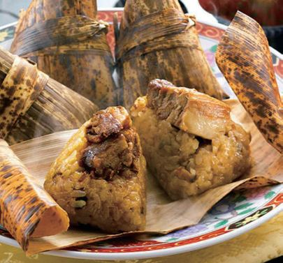
平戸自慢の逸品料理38店舗
平戸産の農水産物や加工品を使った、自慢の逸品が大集合！市内の飲食店や団体、商店街の店舗が出店し、ここでしか味わえない料理や、子どもから大人まで楽しめるメニューが勢ぞろい！平戸ならではの味をお楽しみください。

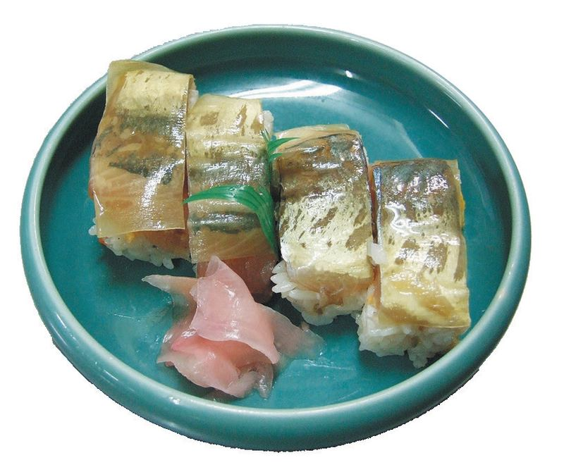
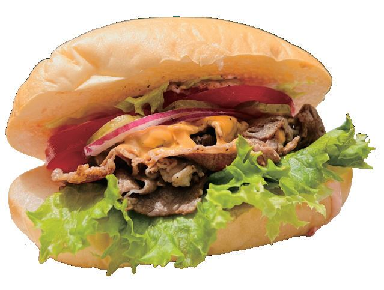
日頃より商工・産業関係イベントにご協力いただき誠に有難うございます。
さて、10月24日、25日に平戸市街商店街一帯にて開催を予定しておりました「第６回平戸くんち城下つんのーで祭」につきましては、台風接近による大雨及び暴風が予測されるため本日実行委員会において協議を行い、開催を中止させていただくこととなりました。
つんのーで祭を楽しみにされていた皆様には、ご迷惑をおかけし大変申し訳ございません。
何卒ご理解のほどよろしくお願いいたします。
2026年10月22日
平戸市産業まつり実行委員会
台風接近のため、開催は中止となりました

平戸の食を
味わおう。
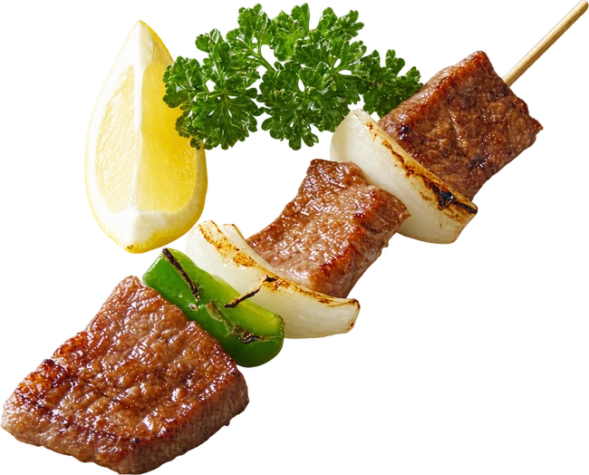
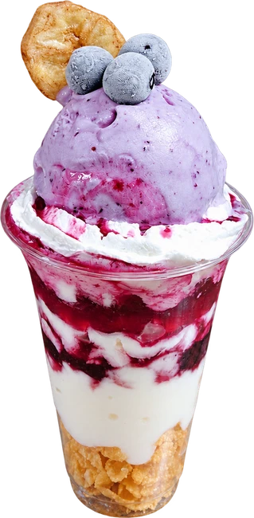
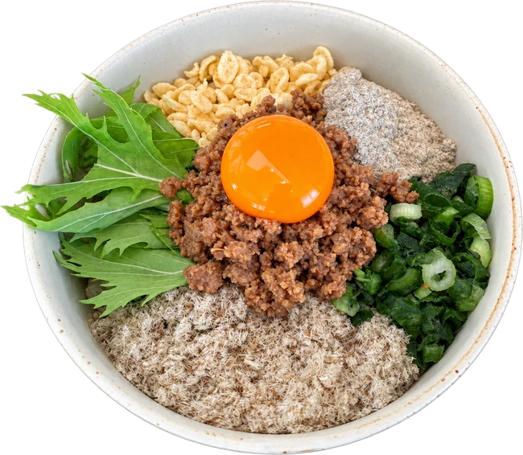
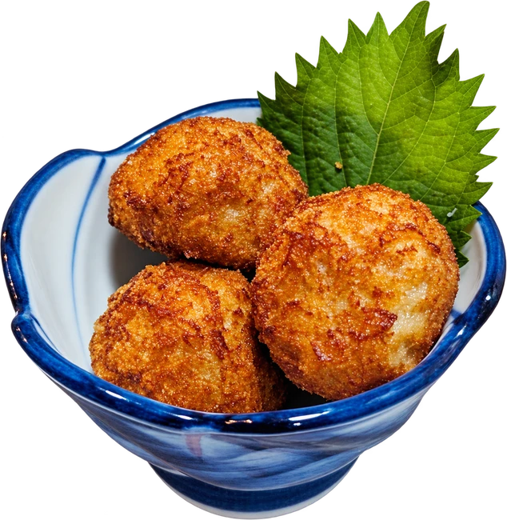
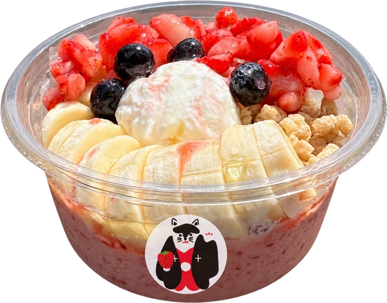
みんなで「つんのーで」味わい尽くそう！
開催中止
2026年 10月
24日（土）・25日（日）
11:00〜17:00
平戸市街商店街一帯浦の町〜魚の棚町
交通規制 10:00〜18:00
平戸の食と伝統が
集う2日間。
各店自慢の逸品料理をはじめ、ひらど軽トラ市や、平戸市交流物産市、賑やかなステージイベントなど、平戸の魅力をたっぷり楽しめる2日間です。「つんのーで」とは、平戸の方言で、「連れてって」「一緒に」という意味です。家族や友人と皆で「つんのーで」遊びに来てください。

平戸産の農水産物や加工品を使った、自慢の逸品が大集合！市内の飲食店や団体、商店街の店舗が出店し、ここでしか味わえない料理や、子どもから大人まで楽しめるメニューが勢ぞろい！平戸ならではの味をお楽しみください。




毎月第4日曜日に開催している「ひらど軽トラ市」を、2日間開催いたします。平戸の秋を代表する「あご」をはじめ、平戸産の農水産物や加工品など、地元の魅力あふれる商品が軽自動車に並びます。旬の味覚や平戸ならではの特産品をお買い求めください。

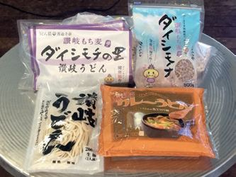

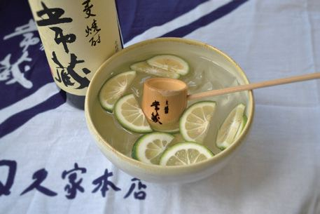
平戸市と交流のある、香川県善通寺市、大分県竹田市・臼杵市、福岡県うきは市の4市に出店いただき、野菜、果物、特産品を販売いたします。販売数に限りがございますのでお早めにお買い求めください。

平戸市田平町出身。全日本歌唱力選手権「歌唱王」第13回優勝。24日に歌謡ショー＆トークライブを開催。
※イベント内容・日程・時間は変更になる場合があります。
焼きたてカステラ食べ放題（要予約）や、牛蒡餅つかみ取り、イベントミッションなど、大人も子どもも楽しめるイベントを準備しております。ネオンがきらめくハロウィン仕様の店内でご来場お待ちしております。
カステラの焼き上がりは11:00・13:00・15:00の予定。
問合せ：牛蒡餅本舗 熊屋 0950-22-2046
つんのーで祭会場を回遊している4人の偉人を探そう！4人のうち3人の偉人を見つけて、ラリー用紙にスタンプを押してもらうと、本部で500円のお買物券がもらえるよ。ラリー用紙は各インフォメーションに置いてあるよ。（各日先着30名様）
問合せ：平戸商工会議所
0950-22-3131
対象者：小学生以上（小学生は保護者同伴でお願いします）
事前の申し込みが必要です。定員になり次第受付を終了させていただきます。※有事の際は中止になります。
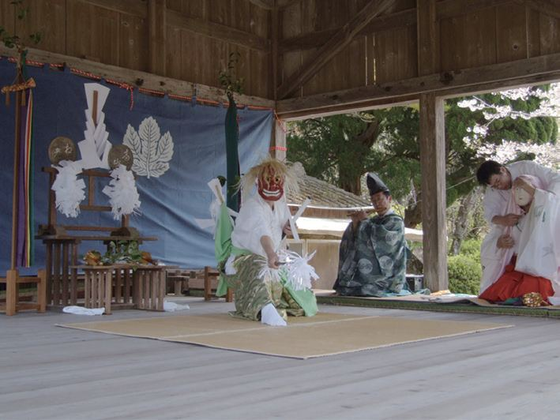
台風接近のため、こちらの行事も中止となりました。
同じ週末は、令和八年 亀岡神社例大祭「平戸おくんち」。25日（日）は大名行列を見てから、そのまま商店街へ。
| 10/24（土） | 事始神事［宵祭］14:00〜 亀岡神社 |
|---|---|
| 10/25（日） | 御神幸祭 8:30〜（大名行列出発 10:00〜） |
| 10/26（月） | 大々神楽 11:00〜（平戸神楽1番）、13:00〜（2番以降） 亀岡神社 |
| 10/27（火） | 例大祭 10:00〜、献茶祭 13:00〜 亀岡神社 |
国指定重要無形民俗文化財「平戸神楽」の大大神楽（全24番）は、26日11時からの亀岡神社例大祭でのみ見られます。元禄時代、古来から伝わる平戸の神楽を基礎とし、諸国の神楽の粋を集めて完成しました。
無料駐車場から、
無料シャトルバスで会場へ。